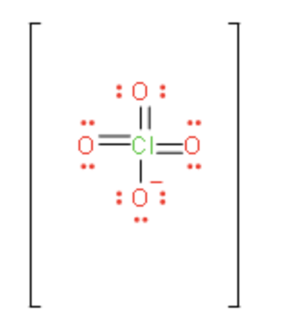

FIITJEE CHEMISTRY CHEMICAL BONDING : DAY 5
OBJECTIVE
B
A
A
Correct Answer: (C) [CN–, F2]
Explanation:- Choice (A) [CN–, NO]: CN– is a cyanide ion with an additional electron compared to the neutral CN molecule, typically resulting in a filled electron configuration, making it diamagnetic. NO, or nitric oxide, has an odd number of electrons, with 11 electrons, typically resulting in one unpaired electron, making it paramagnetic.
- Choice (B) [NO–, O2–]: Adding an electron to NO fills the unpaired electron, making NO– diamagnetic. O2–, or superoxide ion, which results from adding an electron to the oxygen molecule O2 (which has two unpaired electrons), still has one unpaired electron remaining, making O2– paramagnetic.
- Choice (C) [CN–, F2]: CN– as mentioned is likely diamagnetic. F2, or fluorine molecule, has all paired electrons in its molecular orbital configuration, making it diamagnetic. This is the only pair where both molecules are diamagnetic.
- Choice (D) [CO, NO]: Carbon monoxide (CO) is diamagnetic as all electrons are paired in its molecular orbitals. NO, as noted, is paramagnetic due to the presence of an unpaired electron.
A
C
A
Correct Answer: (B) 1.75
- From the provided figure, the \(ClO_4^-\) ion is shown with three double bonds and one single bond surrounding the central chlorine atom. This results in a total of 7 bond units (3 double bonds = 6 units + 1 single bond = 1 unit).
- The resonance in \(ClO_4^-\) involves the delocalization of these bonds among the four oxygen atoms. Each resonance structure can feature any one of the oxygen atoms having a double bond with the chlorine, while the others are single-bonded.
- The total number of resonance structures for \(ClO_4^-\) is four, corresponding to each unique arrangement of the double bond among the oxygen atoms.
- To calculate the bond order, we use the formula:
- Substituting the numbers, the calculation is as follows:
- This bond order of approximately 1.75 reflects that each Cl–O bond in the resonance hybrid of \(ClO_4^-\) has partial double bond characteristics, making the bond order greater than a simple single bond but less than a full double bond.
- The bond order calculated as 1.75 confirms that the perchlorate ion's structure, due to resonance, allows for an intermediate bond strength across all bonds, indicative of the delocalized electron density across the oxygen atoms.
\[ \text{Bond order} = \frac{\text{Total number of bond units around Cl}}{\text{Total number of resonance structures}} \]
\[ \text{Bond order} = \frac{7}{4} \approx 1.75 \]
C
D
Correct Answer: (D) \(N_2^+ > N_2 > N_2^-\)
Explanation:- Basic Concepts: Bond Order is directly related to the bond strength and stability of a molecule. Higher bond orders generally mean stronger, shorter bonds. Bond Energy is the energy required to break one mole of bonds in a compound, under standard conditions. Higher bond orders typically correlate with higher bond energies.
- \(N_2\) (Nitrogen Molecule): \(N_2\) has a triple bond between the two nitrogen atoms with a bond order of 3. This is one of the strongest known diatomic bonds due to the triple bond.
- \(N_2^+\) (Nitrogen Cation): When an electron is removed from \(N_2\), forming \(N_2^+\), it typically comes from the highest occupied molecular orbital, which is an antibonding orbital (\(\pi^*\)). Removing an antibonding electron increases the bond order, albeit slightly. For \(N_2^+\), the bond order increases from 3 to 3.5.
- \(N_2^-\) (Nitrogen Anion): Adding an electron to \(N_2\) results in \(N_2^-\). The added electron goes into the highest occupied molecular orbital, which is an antibonding orbital. This addition decreases the bond order from 3 to 2.5.
- Bond Order and Energy Relationship: Higher Bond Order → Higher Bond Energy. Given the bond orders, \(N_2^+\) (3.5) > \(N_2\) (3) > \(N_2^-\) (2.5).
- Conclusion: The bond energies should inversely correlate with the addition or removal of electrons in antibonding orbitals. Therefore, \(N_2^+\), having the highest bond order, should have the highest bond energy, followed by \(N_2\) and then \(N_2^-\).
- Correct Answer: (D) \(N_2^+ > N_2 > N_2^-\)
- Reasoning: This suggests that \(N_2^+\) should have the highest bond energy due to an increased bond order from the removal of an antibonding electron, followed by \(N_2\), and then \(N_2^-\), which has a decreased bond order due to the addition of an electron to an antibonding orbital.
Correct Answer: (B) \(O_2^+ > O_2 > O_2^-\)
Explanation:- Bond Order Calculation: The bond order of a molecule is calculated as:
- \(O_2\) (Oxygen Molecule): The neutral oxygen molecule has a bond order of 2. This can be derived by noting that it has 10 bonding electrons and 6 antibonding electrons: \[ \text{Bond order of \(O_2\)} = \frac{10 - 6}{2} = 2 \]
- \(O_2^+\) (Oxygen Cation): Removing one electron from \(O_2\) removes it from an antibonding orbital, increasing the bond order: \[ \text{Bond order of \(O_2^+\)} = \frac{10 - 5}{2} = 2.5 \]
- \(O_2^-\) (Superoxide Ion): Adding one electron to \(O_2\) places it in an antibonding orbital, decreasing the bond order: \[ \text{Bond order of \(O_2^-\)} = \frac{10 - 7}{2} = 1.5 \]
- Conclusion: The bond order for \(O_2^+\) is higher than that of \(O_2\), and the bond order of \(O_2\) is higher than that of \(O_2^-\). Therefore, the correct order of bond orders is: \(O_2^+ > O_2 > O_2^-\).
\[ \text{Bond order} = \frac{\text{Number of bonding electrons} - \text{Number of antibonding electrons}}{2} \]
The molecular orbitals of oxygen involve both bonding and antibonding orbitals, and the bond order decreases if electrons are added to antibonding orbitals or increases if electrons are removed from antibonding orbitals.
Correct Answer: (C) It contains unpaired electrons
Explanation:- Basic Concepts: Paramagnetism occurs when a molecule has one or more unpaired electrons, resulting in a magnetic moment. Molecules with unpaired electrons are attracted to magnetic fields. In contrast, diamagnetism occurs when all electrons in a molecule are paired, and these molecules are weakly repelled by magnetic fields.
- Molecular Orbital Theory: The bonding in oxygen (\(O_2\)) can be explained using molecular orbital theory. In this theory, atomic orbitals combine to form bonding and antibonding molecular orbitals. The molecular orbitals are filled according to their energy levels, with the lowest energy orbitals being filled first.
- Electron Configuration of \(O_2\): Oxygen has 12 valence electrons, and the molecular orbital configuration is: \[ (\sigma_{2s})^2 (\sigma^*_{2s})^2 (\sigma_{2p_z})^2 (\pi_{2p_x})^2 (\pi_{2p_y})^2 (\pi^*_{2p_x})^1 (\pi^*_{2p_y})^1 \] This shows that the two electrons in the antibonding \(\pi^*\) orbitals (\(\pi^*_{2p_x}\) and \(\pi^*_{2p_y}\)) are unpaired.
- Paramagnetism of \(O_2\): Because \(O_2\) has two unpaired electrons in the antibonding \(\pi^*\) orbitals, it is paramagnetic. These unpaired electrons generate a magnetic moment, causing \(O_2\) to be attracted to a magnetic field.
- Conclusion: The paramagnetism of \(O_2\) is due to the presence of two unpaired electrons in the antibonding \(\pi^*\) molecular orbitals. Therefore, the correct answer is (C).
Correct Answer: (C) [CN–, F2]
Explanation:- Choice (A) [CN–, NO]: CN– is diamagnetic, but NO is paramagnetic with one unpaired electron.
- Choice (B) [NO+, O2–]: NO+ is diamagnetic, but O2– is paramagnetic with one unpaired electron.
- Choice (C) [CN–, F2]: Both CN– and F2 are diamagnetic, making this the only pair where both are diamagnetic.
- Choice (D) [CO, NO]: CO is diamagnetic, but NO is paramagnetic due to the presence of an unpaired electron.
D